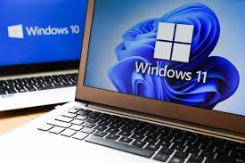

| Scope 1: Windows 7 Boot up time: What is the boot up time for HDD and SSD in Windows 7? |
 |
| Methodology 1: Windows 7 Boot up time: Record the time taken for laptops containing HDD and SSD
to boot up and restart by using a stopwatch. How long does it take for laptops with
HDD and SSD to boot up and restart? |
| Scope 2: File Opening Speed: What is the file opening speed of HDD and SSD? |
 |
| Methodology 2: We will record the scene where we will use laptops with HDD
and SSD to open several programs such as Facebook, Garena Plus, Warcraft, uTorrent,
and more. Then we will observe which laptop can open all these programs faster and
without making the programs freeze. |